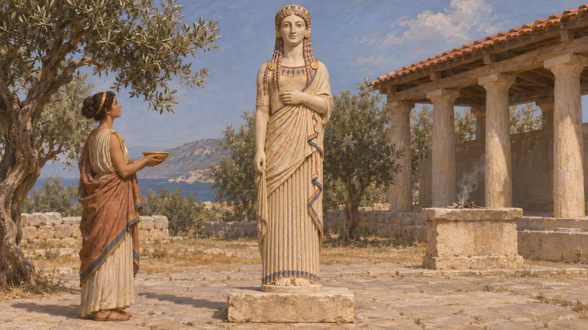
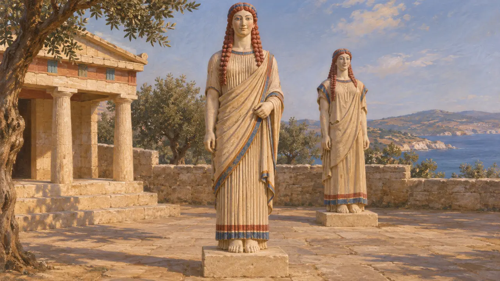
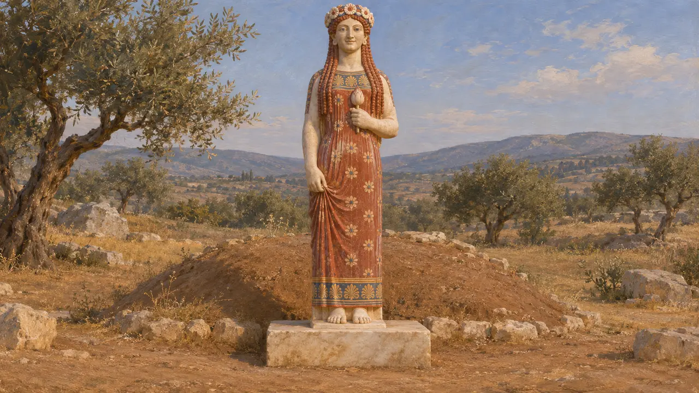
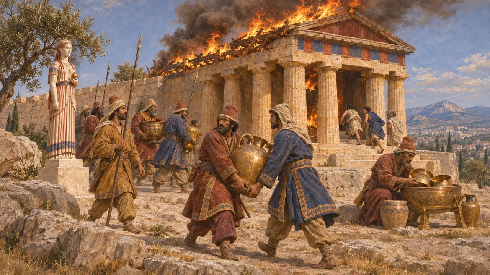
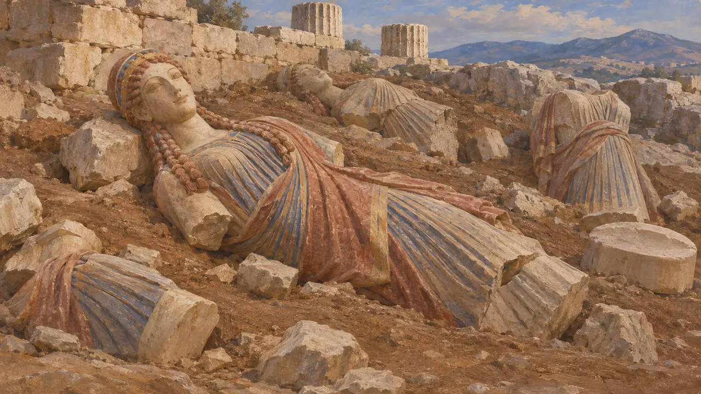

少女像
古风时期希腊大理石立姿少女像，约公元前650-480年
少女像（希腊语kore意为“少女”，复数为korai）是一种年轻女子的大理石雕像，通常与真人等大或略小，站立，衣饰华丽，常手捧供品向前伸出。希腊人将其立于圣所作为献给神明的礼物，有时也用作墓碑。数量最多的一批出自雅典卫城，它们之所以大多得以留存，是因为在公元前480年波斯人洗劫时被砸毁，之后被埋入地下。
游戏中： 游戏中，希腊城镇和萨第斯可建造住房类的少女像，呈现为身着褶裥希顿长袍的彩绘少女。其说明只提到圣所献祭，但有些少女像，如弗拉西克莱娅像，也用作墓碑。

献给众神的礼物
见于史载带铭文的基座表明，少女像是献祭品。献者会写下自己的名字和所献的神祇，常称雕像为agalma，即令神欢悦的礼物。最早的一尊约于公元前650年出自提洛岛，由纳克索斯的女子尼坎德瑞献给阿尔忒弥斯。在萨摩斯，一位名叫刻拉米斯的男子约于公元前570-560年向赫拉献上一尊少女像，今藏于卢浮宫。
G. M. A. Richter, Korai: Archaic Greek Maidens, 1968

服饰、色彩与爱奥尼亚风尚
见于史载有些少女像身着厚重的羊毛佩普洛斯袍。出自雅典卫城、约公元前530年的“佩普洛斯少女像”即因此得名，不过彩绘复原表明，她可能是一位身着另一种服饰的女神。自公元前6世纪中叶起，许多少女像采用爱奥尼亚式装束：内着轻薄打褶的亚麻希顿，外披斜向垂挂的披风。头发、眼睛和衣缘纹样上残存着红、蓝等颜料痕迹，表明这些大理石像原本是彩绘的。
V. Brinkmann, Gods in Color, 2007

墓上的少女像
见于史载并非每尊少女像都立于圣所之中。弗拉西克莱娅像于1972年在阿提卡的梅伦达出土，署有帕罗斯的阿里斯提翁之名，约公元前550-前540年间用作一位少女的墓碑。其基座铭文大意是：她将永远被称为少女，因为众神赐她此名，以代婚嫁。
K. Karakasi, Archaic Korai, 2003

波斯人洗劫雅典卫城
古代记述希罗多德记载，公元前480年，薛西斯的军队在阿格劳洛斯神祠附近一处陡峭且无人把守的地方攀上了雅典卫城。一些守军从城墙上纵身跃下，另一些逃进了神庙。波斯人杀死了在那里避难的人，洗劫了圣所，并将整座卫城付之一炬。希罗多德没有提及那些雕像的下落。
Herodotus 8.53

掩埋的废墟与未解之谜
争夺中1885至1890年在雅典卫城的发掘中，于破碎雕像的填埋层里出土了大量少女像，有些至今彩绘鲜明。这些填埋层通常被认为与遭洗劫后的清理有关。一些学者认为，这些残骸并非全部在公元前480年后不久一次性掩埋，这会影响雕像的断代。史家对少女像所表现的对象也有争论：是女神、奉献者、女祭司，还是理想化的少女。卫城的奉献者大多是男性，这削弱了少女像为奉献者肖像的说法。
C. Keesling, The Votive Statues of the Athenian Acropolis, 2003; A. Stewart, American Journal of Archaeology 112, 2008
来源
- G. M. A. Richter, Korai: Archaic Greek Maidens, 1968
- K. Karakasi, Archaic Korai, 2003
- Herodotus 8.53
- C. Keesling, The Votive Statues of the Athenian Acropolis, 2003
- A. Stewart, 'The Persian and Carthaginian Invasions of 480 B.C.E. and the Beginning of the Classical Style', American Journal of Archaeology 112, 2008
- V. Brinkmann, Gods in Color, 2007